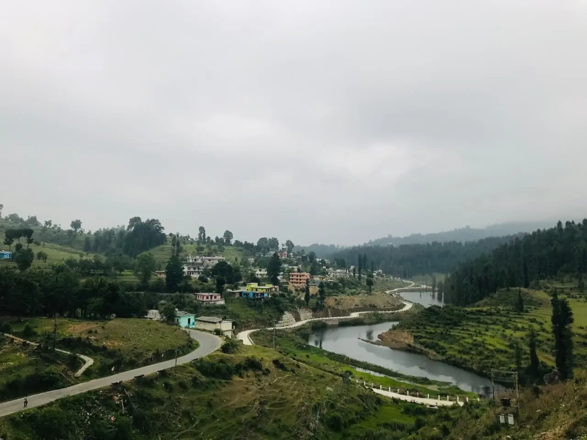
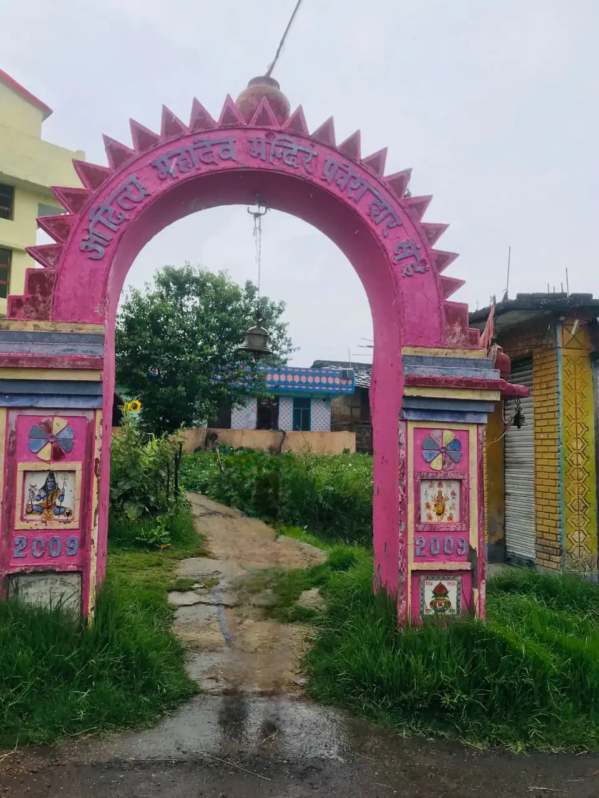
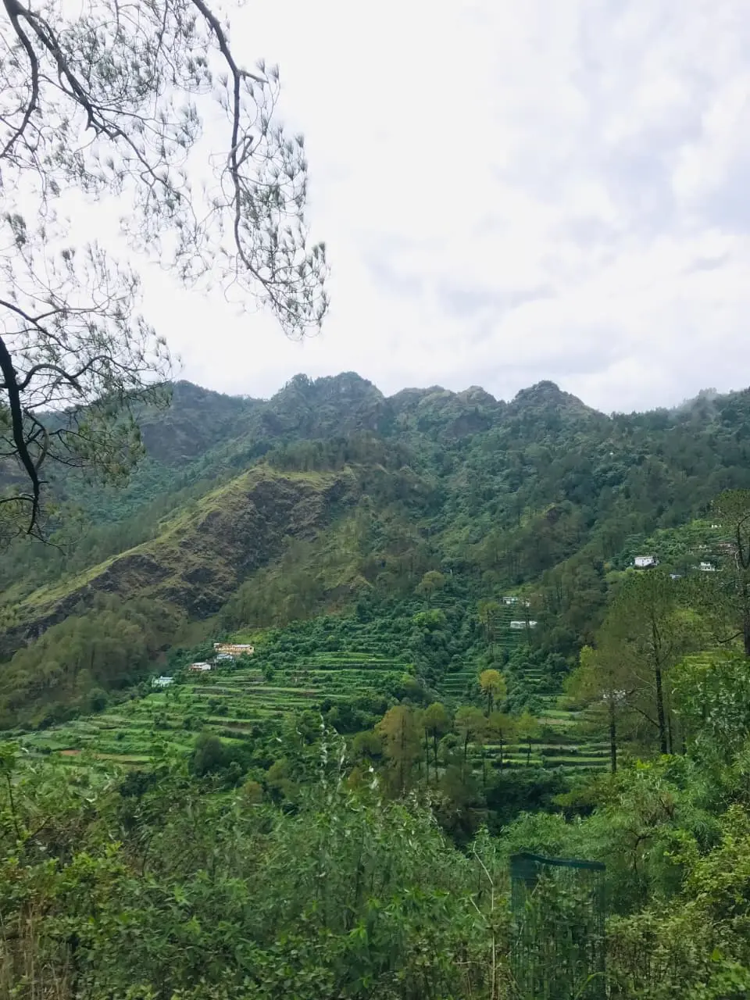
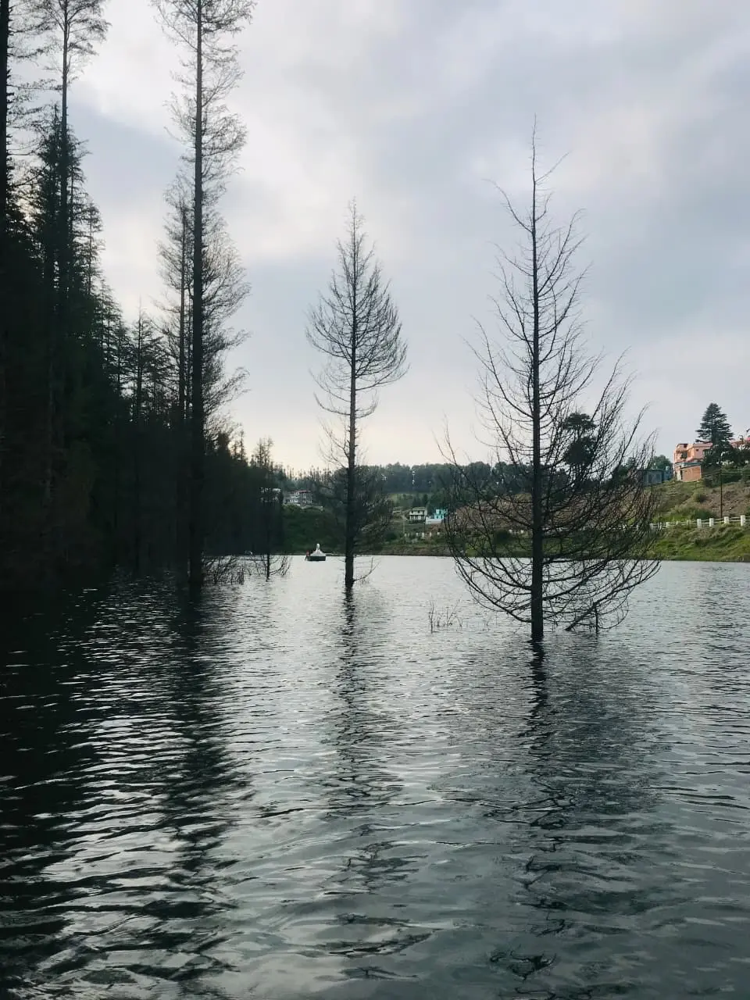
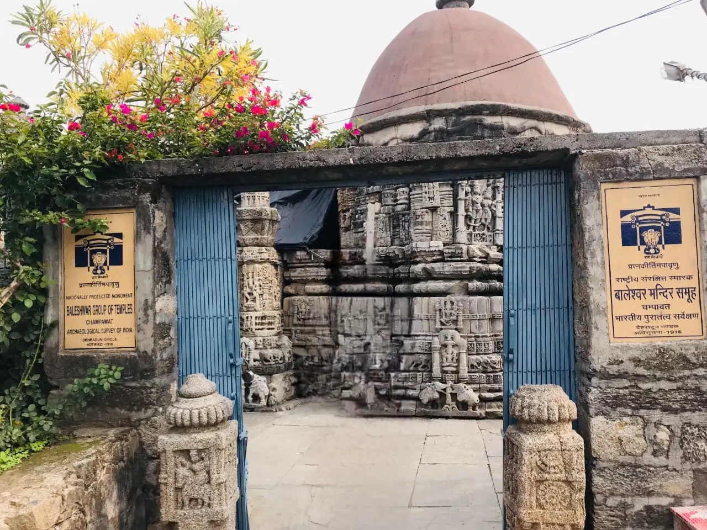
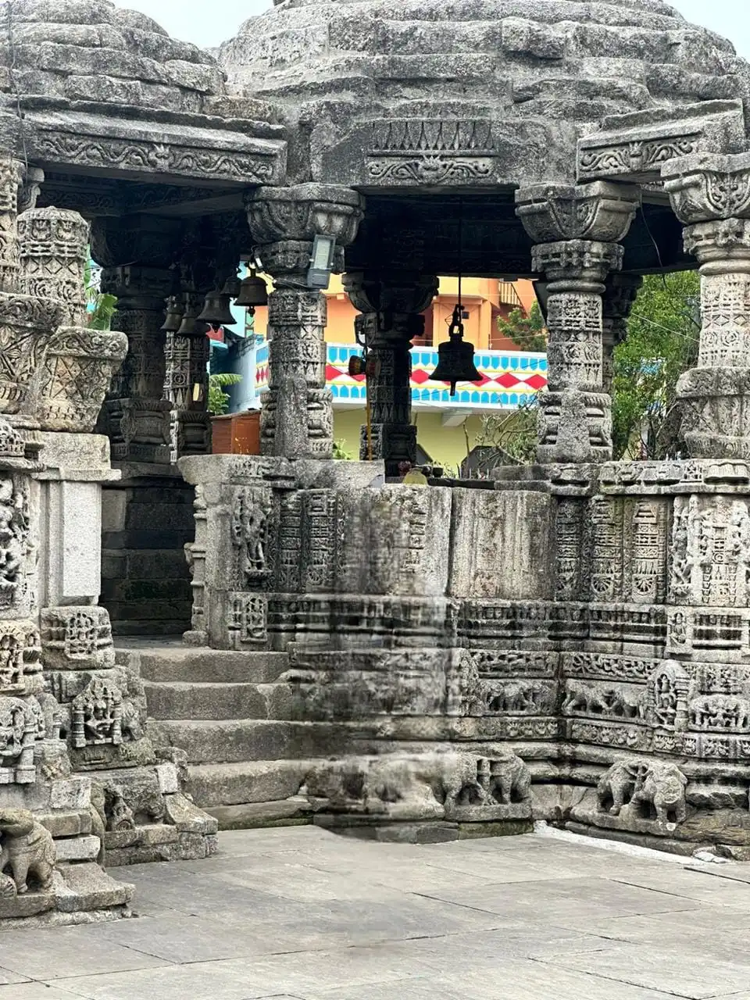
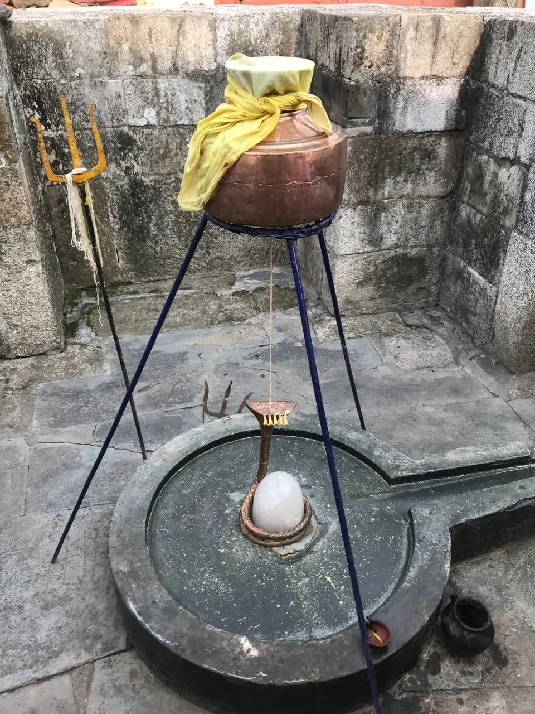
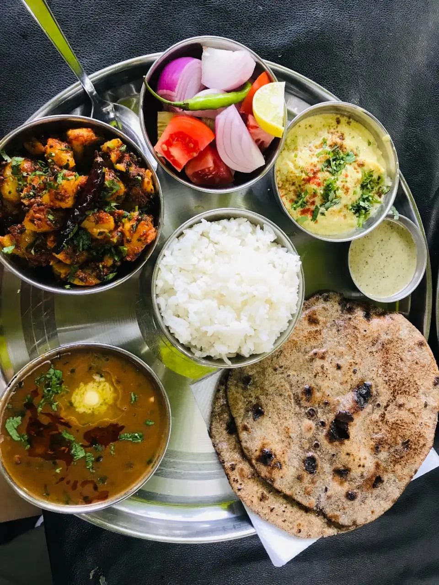

Exploring the Mystical Charm of Lohaghat and Champawat

A Journey Begins
Raindrops danced on the windshield as our journey from Rishikesh to Champawat commenced. Excitement coursed through our veins as we anticipated the adventures that lay ahead. Our first stop was Lohaghat, a quaint town nestled amidst the picturesque Kumaon Hills.
Unveiling the Secrets of Lohaghat
As we arrived in Lohaghat, our eager spirits were dampened by the rain that poured relentlessly. Our plan to visit Banasur Ka Kila, a historic fort, had to be put on hold. Undeterred, we sought refuge in Sui village, a nearby haven.

Sui village greeted us with open arms, and we found solace in the serenity of the Aditya Mahadev Temple. The weather gods seemed to smile upon us, as the rain ceased and the village unveiled its true beauty. The locals were warm, respectful, and eager to share stories of their village's heritage.
Discovering Enchanting Abbott Mount
Leaving Sui village behind, we embarked on a mesmerizing journey to Abbott Mount. Despite its reputation as a haunted place, the locals assured us otherwise. As we ascended the hills, the mist lifted, revealing breathtaking vistas that defied any sense of fear. Abbott Mount charmed us with its rustic charm and panoramic views that stretched as far as the eye could see.

Boating on Koli Jhil and Nightfall in Champawat
Leaving Abbott Mount behind, we set our sights on Koli Jhil, a tranquil lake nestled in the lap of Lohaghat. The lake, ensconced by majestic mountains and lush trees, beckoned us to explore its depths. We couldn't resist the allure and embarked on a boating adventure, capturing precious moments and memories with every click of the camera.

As nightfall enveloped the landscape, we bid farewell to Lohaghat and made our way to Champawat. The town embraced us with its warm hospitality, and we settled into our comfortable hotel, ready to rejuvenate for the adventures that awaited us in the morning.
The Ancient Charms of Baleshwar Mahadev Temple and Golu Devta Mandir

With the first rays of dawn, we embarked on a spiritual journey to Baleshwar Mahadev Temple, an ancient shrine that held historic significance. The temple's magnificent architecture and serene ambiance left us in awe of its grandeur.

Our exploration continued as we visited the revered Golu Devta Mandir, the abode of the lord of justice.

Unveiling Ancient Mysteries in Champawat
After an enlightening visit to Golu Devta, we continued our journey to Maneshwar Mahadev. This revered temple, steeped in history dating back to the times of the Mahabharata, filled us with a sense of awe and wonder. The ancient vibes resonated through the temple grounds, making it a truly remarkable experience.
The Unexpected Journey to 7 Taal
With Nainital out of reach due to the bustling crowds, fate had a different plan for us. We found ourselves venturing towards the enchanting 7 Taal, a lesser-known gem. As we approached the pristine lakes, our hearts were filled with excitement. The beauty of 7 Taal was a revelation, and its serene ambiance offered us a respite from the chaos of crowded tourist spots.
Tranquil Moments and Culinary Delights
7 Taal proved to be a paradise for boating enthusiasts, and we couldn't resist taking a leisurely ride on its calm waters. The surrounding scenery, untouched by the masses, was a feast for the eyes. It was a moment of pure tranquility that we treasured.
To satisfy our hunger, we indulged in a traditional Kumaoni Thali, relishing the local flavors and savoring each bite. The Kumaoni people, known for their warm hospitality, left an indelible mark on our hearts with their respectful and welcoming nature.

Journey's End and Fond Memories
As the day drew to a close, we reluctantly began our journey back to Rishikesh, carrying with us a trove of cherished memories. The beauty of Kumaon, its people, the delectable cuisine, and the pleasant weather etched themselves into our souls.
Reflecting on our travel experience, we realized that the best adventures are often the ones that deviate from our original plans. Nainital's overcrowding led us to the serenity of 7 Taal, where we found solace and enchantment in equal measure.
As we headed home, we couldn't help but feel grateful for the magical journey we had embarked upon. Kumaon had captivated our hearts, and we vowed to return someday to explore more of its hidden treasures.
In conclusion, our travel experience in Kumaon was a delightful blend of spirituality, natural beauty, warm hospitality, and culinary delights. It reminded us that the best adventures are often found when we embrace the unexpected. Kumaon, with its rich history and captivating landscapes, will forever hold a special place in our hearts.
Frequently Asked Questions
Is Lohaghat worth visiting?
Yes, Lohaghat is one of the peaceful hill towns in Uttarakhand known for its natural beauty, temples, and scenic viewpoints like Abbott Mount.
What are the best places to visit near Champawat?
Popular places include Baleshwar Mahadev Temple, Abbott Mount, Koli Jhil, Golu Devta Mandir, and the beautiful lakes of Sattal.
How far is Lohaghat from Rishikesh?
Lohaghat is approximately 330 km from Rishikesh and can be reached by road via Haldwani and Champawat.
What is the best time to visit Lohaghat and Champawat?
The best time to visit is from March to June and September to November when the weather is pleasant and ideal for exploring the hills.